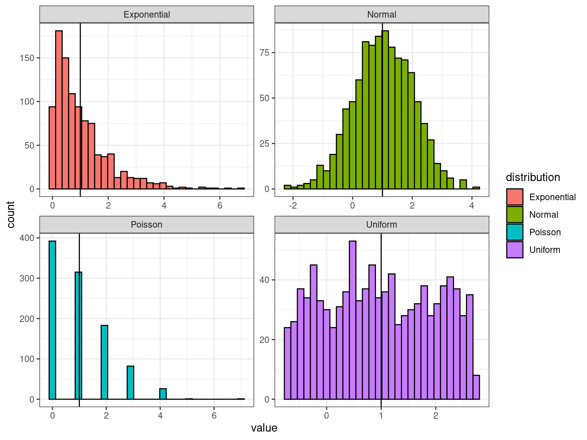
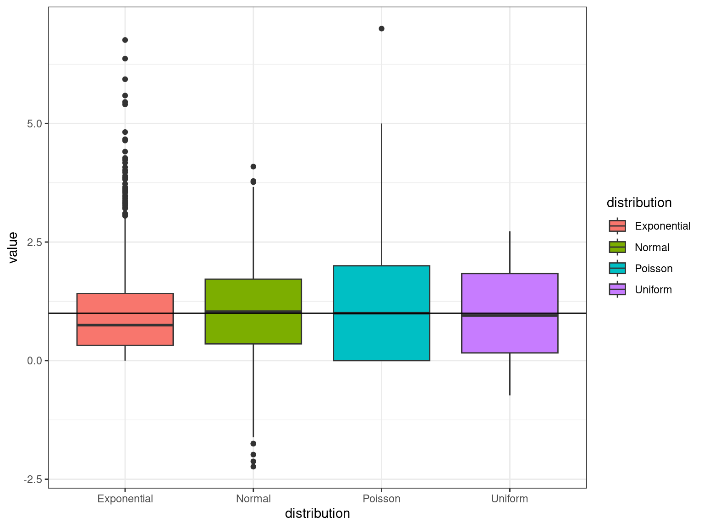

?DistributionsBasic Statistics in R
RAdelaide 2024
Dr Stevie Pederson
Black Ochre Data Labs
Telethon Kids Institute
July 11, 2024
Introduction
Rhas it’s origins as a statistical analysis language (i.e.S)- Purpose of this session is NOT to teach statistical theory
- I am a bioinformatician NOT a statistician
- Perform simple analyses in R
- Up to you to know what you’re doing
- Or talk to your usual statisticians & collaborators
Distributions
Rcomes with nearly every distribution- Standard syntax for accessing each
Distributions
| Distribution | Density | Area Under Curve | Quantile | Random |
|---|---|---|---|---|
| Normal | dnorm() |
pnorm() |
qnorm() |
rnorm() |
| T | dt() |
pt() |
qt() |
rt() |
| Uniform | dunif() |
punif() |
qunif() |
runif() |
| Exponential | dexp() |
pexp() |
qexp() |
rexp() |
| \(\chi^2\) | dchisq() |
pchisq() |
qchisq() |
rchisq() |
| Binomial | dbinom() |
pbinom() |
qbinom() |
rbinom() |
| Poisson | dpois() |
ppois() |
qpois() |
rpois() |
Distributions
- Also Beta, \(\Gamma\), Log-Normal, F, Geometric, Cauchy, Hypergeometric etc…
Distributions
- Let’s take a random sample from a few important distributions
- All have mean \(\mu = 1\) and sd \(\sigma = 1\)
Distributions
- Check our sample means
| Normal | Uniform | Exponential | Poisson |
|---|---|---|---|
| 1.009 | 1.057 | 0.9542 | 1.014 |
Why are the means not exactly equal to 1?
Distributions
- Check our sample variances
| Normal | Uniform | Exponential | Poisson |
|---|---|---|---|
| 0.9922 | 1.021 | 1.072 | 1.037 |
Let’s quickly look through them
Distributions
Distributions
Basic Tests
Data For This Session
We’ll use the pigs dataset from earlier
Data For This Session
t-tests
- Assumes normally distributed data
- \(t\)-tests always test \(H_0\) Vs \(H_A\)
t-tests
When comparing the means of two vectors
\[ H_0: \mu_{1} = \mu_{2} \\ H_A: \mu_{1} \neq \mu_{2} \]
We could use two vectors (i.e. x & y)
Is this a paired test?
t-tests
- An alternative is the
Rformula method:len~supp- Length is a response variable
- Supplement is the predictor
- Can only use one predictor for a T-test
- Otherwise it’s linear regression
Did this give the same results?
Wilcoxon Tests
- We assumed the above dataset was normally distributed:
What if it’s not?
- Non-parametric equivalent is the Wilcoxon Rank-Sum (aka Mann-Whitney)
\(\chi^2\) Test
- Here we need counts
- Commonly used in Observed Vs Expected
\[ H_0: \text{No association between groups and outcome}\\ H_A: \text{Association between groups and outcome} \]
\(\chi^2\) Test
Can anyone remember when we shouldn’t use a \(\chi^2\) test?
Fisher’s Exact Test
- \(\chi^2\) tests became popular in the days of the printed tables
- We now have computers
- Fisher’s Exact Test is preferable in the cases of low cell counts
- (Or any other time…)
- Same \(H_0\) as the \(\chi^2\) test
- Uses the hypergeometric distribution
Summary of Tests
t.test(),wilcox.test()chisq.test(),fisher.test()
shapiro.test(),bartlett.test()- Tests for normality or homogeneity of variance
binomial.test(),poisson.test()kruskal.test(),ks.test()
htest Objects
- All produce objects of class
htest - Use
print.htest()to display results - Is really a list
- Use
names()to see what other values are returned
- Use
Regression
Linear Regression
We are trying to estimate a line with slope & intercept
\[ y = ax + b \]
Or
\[ y = \beta_0 + \beta_1 x \]
Linear Regression
Linear Regression always uses the R formula syntax
y ~ x:yis a function ofx- We use the function
lm()
- Intercept is assumed unless explicitly removed (
~ 0 + ...)
Linear Regression
- It looks like
supp == VCreduces the length of the teeth - In reality we’d like to see if dose has an effect as well
- Which values are associated with the intercept & slope?
- It looks like an increasing dose-level increases length
Interaction Terms
- We have given each group a separate intercept
- The same slope
- Requires an interaction term for different slopes
- How do we interpret this?
Interaction Terms
An alternative way to write the above in R is:
Model Selection
Which model should we choose?
Model Selection
Are we happy with our model assumptions?
- Normally distributed
- Constant Variance
- Linear relationship
Model Selection
- This creates plots using base graphics
- To show them all on the same panel
- Stands for multi-frame rows
Automated Model Selection
- One strategy is to fit a heavily parameterised model
Rcan remove terms as required using Akaike’s Information Criterion (AIC)- The function is
step()
- The function is
- No point here really but…
Logistic Regression
Logistic Regression models probabilities (e.g. \(H_0: \pi = 0\))
- We need to specify two columns to the model
- One represents successes, the other failures
- This is
binomialdata, \(\pi\) is the probability of success
Logistic Regression
Does attendance affect the probability of passing?
glm()can take numerous families (e.g.Poisson)- Generalised Linear Model
- To fit a Poisson dataset set
family = poisson()
Mixed Effects Models
Mixed effects models include:
- Fixed effects & 2) Random effects
May need to nest results within a biological sample, include day effects etc.
Mixed Effects Models
Here we have the change in Blood pressure within the same 5 rabbits
- 6 dose levels of control + 6 dose levels of
MDL - Just looking within one rabbit
Mixed Effects Models
If fitting within one rabbit \(\implies\) use lm()
Mixed Effects Models
To nest within each rabbit we:
- Use
lmer()fromlme4 - Introduce a random effect
(1|Animal)- Captures variance between rabbits
Mixed Effects Models
This gives \(t\)-statistics, but no \(p\)-value
Why?
Mixed Effects Models
- Doug Bates & Ben Bolker are key R experts in this field
- Doug has left the R community
- Lots of discussion for issues estimating DF with random effects
- Ben Bolker also maintains
glmmTMBandglmmADMB- Generalised Mixed-effects Models
- https://bbolker.github.io/mixedmodels-misc/glmmFAQ.html
Modelling Summary
lm()for standard regression modelsglm()for generalised linear modelslmer()for linear mixed-effects models
- Robust models are implemented in
MASS
Other Statistical Tools
Mutiple Testing in R
- The function
p.adjust()takes the argumentmethod = ...
Also the package multcomp is excellent but challenging
PCA
- Here we have 50 genes, from two T cell types: Both Stimulated & Resting 1
PCA
- Our variable of interest here is the cell-types
- We need to set that as the row variable:
- Transpose the data using
t() - Default settings need tweaking (
Sreverse compatability)
- Transpose the data using
- These plots aren’t great…
PCA
- The output of
prcomp()is a list with classprcomp - Components are in
pca$x - Gene loadings are in
pca$rotation- Contributions of each gene to each component
PCA
- My go-to visualisation trick is
PCA Challenge
In this dataset:
- Treg & Th cells
- Resting encoded with
- - Stimulated encoded with
+ - Final number is the donor
- Colour the points by cell type and set the shape by treatment
- Add labels to each point
(Hint: Useggrepel::geom_label_repel())